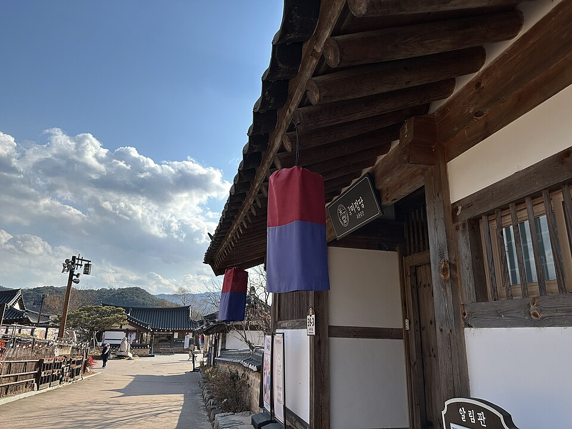
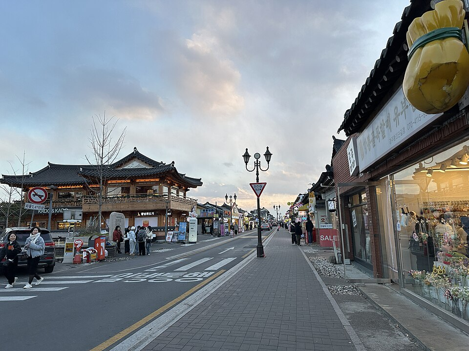

Gyeongbuk qua các video: Quán cà phê, nhà hanok và di tích Silla ở Gyeongju
Hướng dẫn về các quán cà phê, nhà nghỉ hanok và di tích thời Silla xuất hiện trong ba video du lịch Gyeongju, từ Cầu Woljeonggyo và phố Hwangnidan-gil đến Thạch Quật Am Seokguram.
Gyeongbuk và Gyeongju
Gyeongbuk (Tỉnh Gyeongsang Bắc) là nơi có Gyeongju, kinh đô của vương quốc Silla trong suốt một nghìn năm, cũng như Làng dân gian Hahoe ở Andong. Vùng đất này nổi tiếng với các món như gà hầm Andong (jjimdak), canh cá sống Pohang (mulhoe) và nhiều quán ăn dọc phố Hwangnidan-gil ở Gyeongju. Hướng dẫn này tổng hợp những địa điểm ở Gyeongju xuất hiện trong ba video: 3 ngày ở Gyeongju – Mua sắm, cà phê và ẩm thực, Bước vào quá khứ Hàn Quốc: Hành trình Gyeongju và 48 giờ ở Gyeongju – Nghỉ nhà hanok và ẩm thực Hàn Quốc.
Di sản và điểm tham quan thời Silla
Cầu Woljeonggyo
📍 Cầu Woljeonggyo · Naver Map · Google Maps
Một cây cầu thời Silla đã được phục dựng. Cầu cho bạn hình dung phần nào diện mạo Gyeongju xưa và cũng xuất hiện trong hành trình khám phá quá khứ của thành phố trong các video.
Di chỉ Cung điện Wolseong

📍 Di chỉ Cung điện Wolseong · Naver Map · Google Maps
Nơi từng là cung điện hoàng gia Silla. Đi bộ quanh khu đất giúp bạn cảm nhận được trung tâm của kinh đô cổ nằm ở đâu.
Cổ mộ Geumgwanchong
📍 Cổ mộ Geumgwanchong · Naver Map · Google Maps
Một ngôi mộ hoàng gia Silla, một trong nhiều gò mộ rải rác quanh Gyeongju. Đáng ghé nếu bạn muốn tìm hiểu sâu về lịch sử Silla.
Làng truyền thống Gyochon

📍 Làng truyền thống Gyochon · Naver Map · Google Maps
Một ngôi làng truyền thống với những ngôi nhà hanok. Các con hẻm ở đây thích hợp để đi dạo thong thả và cảm nhận không khí phố cổ Gyeongju.
Thạch Quật Am Seokguram

📍 Thạch Quật Am Seokguram · Naver Map · Google Maps
Một ngôi chùa hang bằng đá nổi tiếng và là một trong những di sản tiêu biểu của Gyeongju.
Phố Hwangnidan-gil (Phố Vàng)

📍 Phố Hwangnidan-gil · Naver Map · Google Maps
Con phố đầy quán cà phê và cửa hàng. Như trong video về mua sắm và cà phê, đây là nơi thích hợp để đi dạo, xem hàng và nghỉ chân.
Nhà nghỉ hanok
Sadaham
📍 Sadaham · Naver Map · Google Maps
Một nhà nghỉ hanok được đặt qua Airbnb trong một trong các video. Đây là gợi ý hữu ích nếu bạn muốn ngủ một đêm trong ngôi nhà truyền thống Hàn Quốc.
Hanok Moonstay
📍 Hanok Moonstay · Naver Map · Google Maps
Một nhà khách hanok truyền thống ở Gyeongju, phù hợp với những ai lên kế hoạch chuyến đi quanh các nhà nghỉ hanok và ẩm thực Hàn Quốc.
Nhà hàng và quán cà phê
Dowadang
📍 Dowadang · Naver Map · Google Maps
Một nhà hàng Hàn Quốc. Lựa chọn tốt khi bạn muốn thưởng thức một bữa ăn Hàn Quốc đúng nghĩa trong thời gian ở Gyeongju.
Omamori Gyeongju
📍 Omamori Gyeongju · Naver Map · Google Maps
Điểm dừng cho các món tráng miệng matcha, là chỗ nghỉ tiện lợi giữa các di tích dành cho người thích trà xanh.
Bush Cafe

📍 Bush Cafe · Naver Map · Google Maps
Quán cà phê tập trung vào bánh ngọt, phù hợp khi bạn muốn ăn đồ ngọt.
Cafe Dasi Bom
📍 Cafe Dasi Bom · Naver Map · Google Maps
Quán cà phê ấm cúng có khu vườn, thích hợp để ngồi yên tĩnh.
Olivee Cafe
📍 Olivee Cafe · Naver Map · Google Maps
Một trong những quán cà phê được giới thiệu trong phần đi quán cà phê ở Gyeongju của các video.
Cafe 1984
📍 Cafe 1984 · Naver Map · Google Maps
Một quán cà phê khác xuất hiện trong các video du lịch Gyeongju.
Aden Cafe
📍 Aden Cafe · Naver Map · Google Maps
Cũng được giới thiệu trong video và dễ dàng thêm vào lộ trình đi quán cà phê.
Gợi ý lộ trình
Cầu Woljeonggyo, Di chỉ Cung điện Wolseong và Làng Gyochon nằm cùng trong khu vực di sản trung tâm của Gyeongju, nên tạo thành một vòng đi bộ tự nhiên. Cổ mộ Geumgwanchong và phố Hwangnidan-gil có thể xếp chung trong một ngày, giúp bạn xen kẽ giữa lịch sử với cà phê hoặc mua sắm. Thạch Quật Am Seokguram nằm trên núi Tohamsan, cách xa các điểm trung tâm, nên hãy dành khoảng nửa ngày cho nơi này. Các quán cà phê và nhà hàng nằm rải rác, vì vậy hãy kiểm tra vị trí trên các liên kết bản đồ bên dưới và xen vào làm điểm nghỉ giữa các điểm tham quan. Kết thúc ngày ở một nhà nghỉ hanok là cách hợp lý để cảm nhận không khí Gyeongju.
Quán ăn & địa điểm trong video
- Olivee Cafe (Olivee Cafe) (올리비 카페) Quán cà phê Naver Map Google Maps
- Cầu Woljeonggyo (월정교) Cầu thời Silla đã được phục dựng Naver Map Google Maps
- Phố Hwangnidan-gil (Phố Vàng) (황리단길) Phố quán cà phê và cửa hàng Naver Map Google Maps
- Bush Cafe (부시 카페) Quán bánh ngọt Naver Map Google Maps
- Sadaham (사다함) Nhà nghỉ hanok được đặt qua Airbnb Naver Map Google Maps
- Dowadang (도와당) Nhà hàng Hàn Quốc Naver Map Google Maps
- Omamori Gyeongju (오마모리 경주) Món tráng miệng matcha Naver Map Google Maps
- Di chỉ Cung điện Wolseong (경주 월성) Di chỉ cung điện Silla Naver Map Google Maps
- Cafe 1984 (카페 1984) Quán cà phê Naver Map Google Maps
- Cổ mộ Geumgwanchong (금관총) Ngôi mộ hoàng gia Silla Naver Map Google Maps
- Aden Cafe (아덴 카페) Quán cà phê Naver Map Google Maps
- Hanok Moonstay (한옥문스테이) Nhà nghỉ hanok truyền thống ở Gyeongju Naver Map Google Maps
- Cafe Dasi Bom (카페 다시봄) Quán cà phê ấm cúng có khu vườn Naver Map Google Maps
- Thạch Quật Am Seokguram (석굴암) Chùa hang bằng đá nổi tiếng Naver Map Google Maps
- Làng truyền thống Gyochon (경주 교촌마을) Làng truyền thống với nhà hanok Naver Map Google Maps
Vị trí và giờ mở cửa có thể thay đổi, hãy kiểm tra bản đồ trước khi đi.
Video liên quan


Bài viết khác
- Các địa điểm trong video Jeonnam: Từ Yeosu đến Suncheon và Boseong
- Ẩm thực và điểm đến Jeonbuk qua video: Bibimbap, chợ và nhà hanok ở Jeonju
- Chungcheong & Daejeon trên màn ảnh: Khu rừng nghỉ dưỡng Jangtaesan và Tháp Hanbit
- Seoul trên màn ảnh: Món ăn và địa điểm từ các video du lịch gần đây
- Gyeonggi & Incheon ăn uống và tham quan theo các video: Phố Tàu Incheon, Wolmido, Phố gà rán Suwon và Cung điện Hwaseong Haenggung
- Ẩm thực và địa điểm Gangwon trong các video: Từ cảng Daepo ở Sokcho đến Chodang ở Gangneung